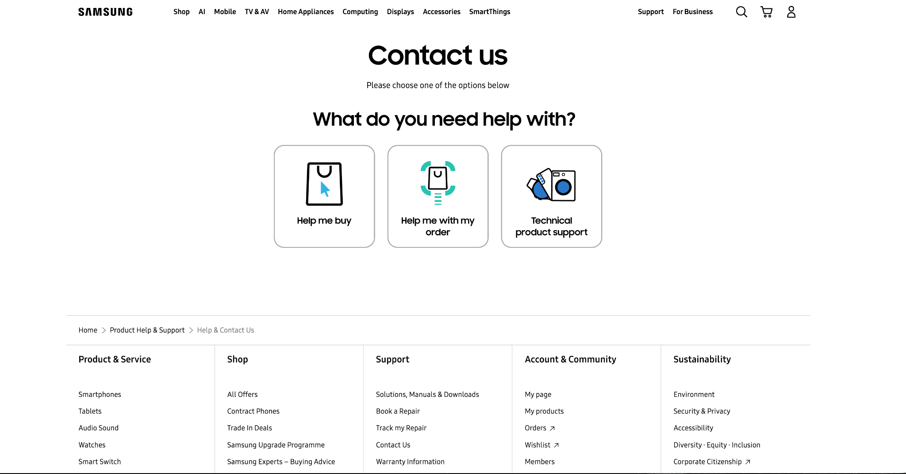

A / DOCUMENT
The full interface. Accurate, contextual and deliberately restrained.
01

HELP /MADECLEAR.
✓ full context△ less visual focus
00 / NORTH STAR
Digital Editorial — disciplined structure, expressive interruptions, real work.
IMAGE TREATMENT
Same interface. Same design language. One variable: how the real work enters the composition.
A / DOCUMENT
The full interface. Accurate, contextual and deliberately restrained.

B / EDITORIAL CROP
The useful part of the journey becomes the composition.
C / DETAIL
Push the crop until the UI behaves more like graphic material.